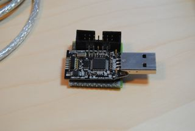
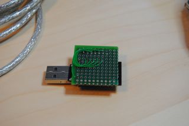
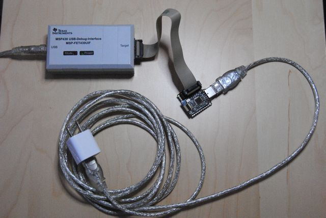
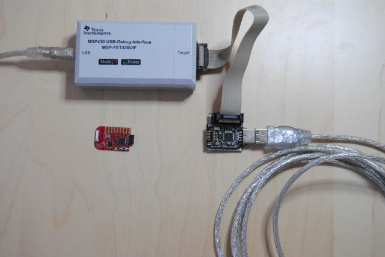
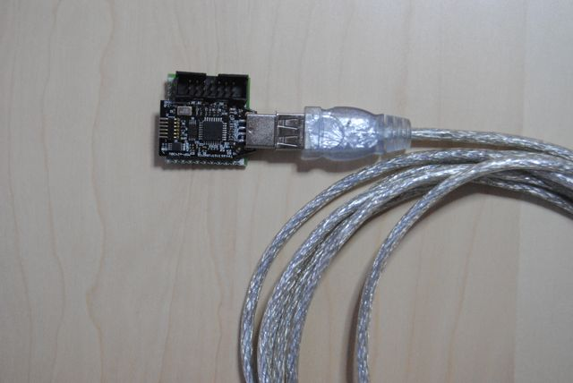
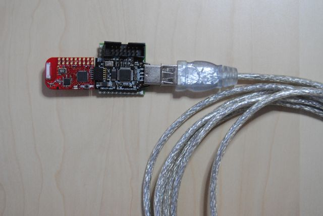

a step by step guide to install D/FW into eZ430U
D/FW is an open source, experimental, and unofficial firmware for eZ430U debug interface. By installing this firmware you can use eZ430U natively on MacOSX, Linux, or other popular Unix systems. Note that once you install this firmware, your eZ430U is no longer usable with TI's official tools, but once you have D/FW equipped 4 wire FET (such as FET430UIF), you should be able to backup/restore the TI's original firmware from another untouched FET.
Please README how to make backup files for eZ430U with D/FW equipped FET.
eZ430U consists of two programmable devices, one is
MSP430F1612 and the other is
TUSB3410.
TUSB3410 takes care of communication between host computer (Unix system)
and MSP430F1612 through USB and the firmware for this device is stored
in EEPROM (24LC128, 16KBytes). This EEPROM is programmed by MSP430F1612
at the time when D/FW equipped FET is powered up for the first time.
D/FW includes an implementation of USB CDC ACM, this means that eZ430U
can be accessed through traditional /dev/tty* interface on most of modern
Unix systems. In MacOSX, eZ430U appears as /dev/cu.usbmodem001 for most cases.
In Linux, eZ430U appears as /dev/ttyACM0 for most cases.
The firmware is programmed to interface /dev/tty and
MSP430F1612's USART. Any data written to corresponding /dev/tty goes
to RXD of MSP430F1612 and any data read from /dev/tty comes from
TXD of MSP430F1612. The host operating system and the firmware takes
care of low level USB protocol and TUSB3410 is transparent for host
programs and the firmware for MSP430F1612.
MSP430F1612 takes commands from the host programs, and does actual
JTAG/SBW manipulation to the target device. Commands are defined in
dfw/cmds.c, and usually accessed by host side library, dfw/libdfw.c.
All of host side utility programs, (dmwt, bufet and gdbproxy) use libdfw to
communicate D/FW equipped FET.
This MSP430F1612 can be programmed through TP1...TP7 of the eZ430U
circuit board, by 4 wire JTAG programmer such as FET430UIF.
dfw/dfw.ez430u.ihex is the D/FW firmware for MSP430F1612 on eZ430U.
As mentioned above, the first time eZ430U is powered up, D/FW
will write the firmware for TUSB3410. This will take about 10 seconds or so.
Be patient. Once EEPROM is programmed successfully,
/dev/tty* will appear in your host Unix system.
To program MSP430F1612 on eZ430U, you have to make TP1...TP7 available for the 4 wire FET you are going to use to program eZ430U.
|  |  |
I attached a socket like above photos, because I was planning to use JTAG interface a lot (to debug D/FW :-). But D/FW can be upgraded from USB port, so once your eZ430U gets D/FW, it is rare that you have to use JTAG to program MSP430F1612 on eZ430. You need JTAG interface only when things really messed up. This way might be easier for most of you.
The followings are the instructions to build host side tools.The photo below shows what you will need.
|  |
|  |
|  |
/dev/cu.usbmodem001 (MacOSX) or /dev/ttyACM0 (Linux) will appear.
$ ../dmwt -p /dev/cu.usbmodem001 -f dfw.ez430u.ihex examining firmware version... program matches with the target, no need to update $
|  |
$ sudo cp dmwt /usr/local/bin $ cd gdbproxy $ ./configure $ make $ sudo cp gdbproxy /usr/local/bin/msp430-gdbproxy
$ dmwt -p /dev/cu.usbmodem001 -c "SBW" demo2 examining current version of the target device....... It took 2.226083 seconds OK, the program needs to be updated. Erasing flash.. It took 0.298997 seconds programming............ done It took 9.391335 seconds $